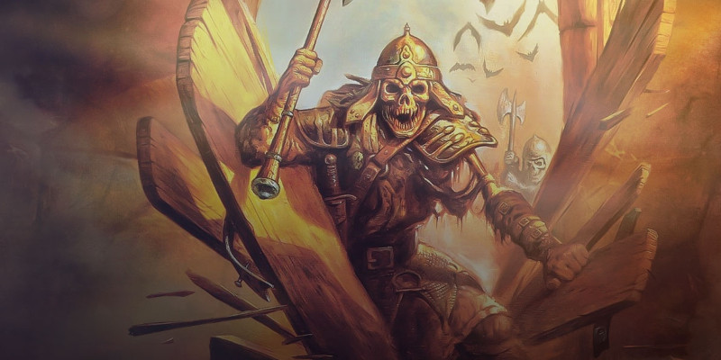

Créer des rencontres
Cet article présente une alternative aux règles de création de rencontres de D&D. Bien que cette approche utilise la même base mathématique sous-jacente au système présenté de le Dungeon Master's Guide, la présentation en est différente et produit ainsi un système plus flexible. Ce système de création de rencontres suppose, qu’en tant que MD, vous souhaitez connaître clairement la menace que représente un groupe de monstres. Il pourra être intéressant pour tout MD qui veut mettre l’accent sur les combats dans ses parties, qui veut s’assurer qu’un ennemi n’est pas trop mortel pour un groupe spécifique de personnages, et qui veut comprendre la relation entre le niveau des personnages et le facteur de puissance des monstres. Construire une rencontre en utilisant ces nouvelles recommandations se déroule en suivant quelques étapes simples.
Étape 1. Évaluer les personnages
Pour construire une rencontre en utilisant ce système, premièrement faites un bilan des personnages. Ce système utilise le niveau des personnages pour déterminer le nombre et le facteur de puissance des créatures que vous pouvez leur opposer sans en faire un combat trop ardu ou trop facile. Mais bien que le niveau d’un personnage soit important, vous devriez aussi prendre note de leur maximum de points de vie, de leurs modificateurs aux jets de sauvegarde, ainsi que le nombre de dégâts que les combattants ou les lanceurs de sorts les plus puissants peuvent infliger en une seule attaque. Même si le niveau des personnages et le facteur de puissance des monstres sont des outils utiles pour déterminer la difficulté d’une rencontre, ces paramètres ne sont pas suffisants, et vous devrez utiliser ces autres paramètres notés lorsque vous sélectionnerez les montres pour une rencontre à l’étape 4.
Étape 2. Taille de la rencontre
Choisissez si vous voulez créer une bataille entre les personnages et une créature légendaire, ou si vous souhaitez qu’il y ait plusieurs adversaires. Si vous ne voulez utiliser qu’un seul adversaire, il est préférable d’utiliser une créature légendaire, ces dernières sont toutes conçues pour donner du fil à retordre à un groupe de personnage.
Étape 3. Facteurs de Puissance et nombre de créatures
Le procédé pour construire une rencontre contre une seule créature légendaire est simple. La table ci-dessous vous montre quel facteur de puissance utiliser pour un combat entre une créature légendaire et un groupe de 4 à 6 personnages, afin d'en faire une rencontre satisfaisante mais difficile. Par exemple, pour un groupe de 5 personnages de niveau 9, une créature légendaire de FP 12 est une rencontre appropriée.
Pour un combat mortel, opposez votre groupe à une créature légendaire d’un FP supérieur de 1 ou 2. Pour une rencontre relativement aisée, utilisez une créature légendaire dont le FP est inférieur de 3 ou plus.
| Niveau des personnages |
6 personnages |
5 personnages |
4 personnages |
|---|---|---|---|
| 1 | 2 | 2 | 1 |
| 2 | 4 | 3 | 2 |
| 3 | 5 | 4 | 3 |
| 4 | 6 | 5 | 4 |
| 5 | 9 | 8 | 7 |
| 6 | 10 | 9 | 8 |
| 7 | 11 | 10 | 9 |
| 8 | 12 | 11 | 10 |
| 9 | 13 | 12 | 11 |
| 10 | 14 | 13 | 12 |
| 11 | 15 | 14 | 13 |
| 12 | 17 | 16 | 15 |
| 13 | 18 | 17 | 16 |
| 14 | 19 | 18 | 17 |
| 15 | 20 | 19 | 18 |
| 16 | 21 | 20 | 19 |
| 17 | 22 | 21 | 20 |
| 18 | 22 | 21 | 20 |
| 19 | 23 | 22 | 21 |
| 20 | 24 | 23 | 22 |
Si votre rencontre implique plusieurs créatures, un peu plus de travail est nécessaire pour l’équilibrer. Premièrement, vous devez déterminer le nombre de créatures que vous souhaitez opposer aux personnages, ainsi que le facteur de puissance de chacune d’elles. Les tables suivantes sont réparties par niveaux, et donnent des informations pour équilibrer les rencontres pour des personnages de niveau 1 à 5, 6 à 10, 11 à 15, et 16 à 20.
Pour créer votre rencontre, rechercher le niveau de chacun des personnages sur la table appropriée. Chaque table vous renseigne sur l’équivalence du niveau d’un seul personnage en termes de facteur de puissance - une valeur représentée par un rapport entre le nombre de personnages et un monstre unique, classée par facteur de puissance. Le premier nombre est le nombre de personnages du niveau donné. Le second indique l’équivalence en nombre de monstres d'un facteur de puissance donné.
En regardant la ligne pour des personnages de niveau 1 dans la table Niveaux 1 à 5, on voit qu’un personnage de niveau 1 est équivalent à deux monstres de FP 1/8 ou à un seul de FP 1/4. Le rapport s’inverse pour les facteurs de puissance plus élevés, ainsi une créature de FP 1/2 et plus est plus puissante qu’un personnage de niveau 1. Il faut 3 personnages de niveau 1 pour une créature de FP 1/2, et 5 personnages pour un adversaire de FP 1.
| Niveau du | - Facteur de Puissance - | ||||||||
|---|---|---|---|---|---|---|---|---|---|
| personnage | 1/8 | 1/4 | 1/2 | 1 | 2 | 3 | 4 | 5 | 6 |
| 1 | 1:2 | 1:1 | 3:1 | 5:1 | - | - | - | - | - |
| 2 | 1:3 | 1:2 | 1:1 | 3:1 | 6:1 | - | - | - | - |
| 3 | 1:5 | 1:2 | 1:1 | 2:1 | 4:1 | 6:1 | - | - | - |
| 4 | 1:8 | 1:4 | 1:2 | 1:1 | 2:1 | 4:1 | 6:1 | - | - |
| 5 | 1:12 | 1:8 | 1:4 | 1:2 | 1:1 | 2:1 | 3:1 | 5:1 | 6:1 |
| Niveau du | - Facteur de Puissance - | ||||||||||||
|---|---|---|---|---|---|---|---|---|---|---|---|---|---|
| personnage | 1/8 | 1/4 | 1/2 | 1 | 2 | 3 | 4 | 5 | 6 | 7 | 8 | 9 | 10 |
| 6 | 1:12 | 1:9 | 1:5 | 1:2 | 1:1 | 2:1 | 2:1 | 4:1 | 5:1 | 6:1 | - | - | - |
| 7 | 1:12 | 1:12 | 1:6 | 1:3 | 1:1 | 1:1 | 2:1 | 3:1 | 4:1 | 5:1 | - | - | - |
| 8 | 1:12 | 1:12 | 1:7 | 1:4 | 1:2 | 1:1 | 2:1 | 3:1 | 3:1 | 4:1 | 6:1 | - | - |
| 9 | 1:12 | 1:12 | 1:8 | 1:4 | 1:2 | 1:1 | 1:1 | 2:1 | 3:1 | 4:1 | 5:1 | 6:1 | - |
| 10 | 1:12 | 1:12 | 1:10 | 1:5 | 1:2 | 1:1 | 1:1 | 2:1 | 2:1 | 3:1 | 4:1 | 5:1 | 6:1 |
| Niveau du | - Facteur de Puissance - | ||||||||||||||
|---|---|---|---|---|---|---|---|---|---|---|---|---|---|---|---|
| personnage | 1 | 2 | 3 | 4 | 5 | 6 | 7 | 8 | 9 | 10 | 11 | 12 | 13 | 14 | 15 |
| 11 | 1:6 | 1:3 | 1:2 | 1:1 | 2:1 | 2:1 | 2:1 | 3:1 | 4:1 | 5:1 | 6:1 | - | - | - | - |
| 12 | 1:8 | 1:3 | 1:2 | 1:1 | 1:1 | 2:1 | 2:1 | 3:1 | 3:1 | 4:1 | 5:1 | 6:1 | - | - | - |
| 13 | 1:9 | 1:4 | 1:2 | 1:2 | 1:1 | 1:1 | 2:1 | 2:1 | 3:1 | 3:1 | 4:1 | 5:1 | 6:1 | - | - |
| 14 | 1:10 | 1:4 | 1:3 | 1:2 | 1:1 | 1:1 | 2:1 | 2:1 | 3:1 | 3:1 | 4:1 | 4:1 | 5:1 | 6:1 | - |
| 15 | 1:12 | 1:5 | 1:3 | 1:2 | 1:1 | 1:1 | 1:1 | 2:1 | 2:1 | 3:1 | 3:1 | 4:1 | 5:1 | 5:1 | 6:1 |
| Niveau du | - Facteur de Puissance - | ||||||||||||||||||
|---|---|---|---|---|---|---|---|---|---|---|---|---|---|---|---|---|---|---|---|
| personnage | 2 | 3 | 4 | 5 | 6 | 7 | 8 | 9 | 10 | 11 | 12 | 13 | 14 | 15 | 16 | 17 | 18 | 19 | 20 |
| 16 | 1:5 | 1:3 | 1:2 | 1:1 | 1:1 | 1:1 | 2:1 | 2:1 | 2:1 | 3:1 | 4:1 | 4:1 | 5:1 | 5:1 | 6:1 | - | - | - | - |
| 17 | 1:7 | 1:4 | 1:3 | 1:2 | 1:1 | 1:1 | 1:1 | 2:1 | 2:1 | 2:1 | 3:1 | 3:1 | 4:1 | 4:1 | 5:1 | 6:1 | - | - | - |
| 18 | 1:7 | 1:5 | 1:3 | 1:2 | 1:1 | 1:1 | 1:1 | 2:1 | 2:1 | 2:1 | 3:1 | 3:1 | 4:1 | 4:1 | 5:1 | 6:1 | 6:1 | - | - |
| 19 | 1:8 | 1:5 | 1:3 | 1:2 | 1:2 | 1:1 | 1:1 | 1:1 | 2:1 | 2:1 | 2:1 | 3:1 | 3:1 | 4:1 | 4:1 | 5:1 | 6:1 | 6:1 | - |
| 20 | 1:9 | 1:6 | 1:4 | 1:2 | 1:2 | 1:1 | 1:1 | 1:1 | 1:1 | 2:1 | 2:1 | 2:1 | 3:1 | 3:1 | 4:1 | 4:1 | 5:1 | 5:1 | 6:1 |
Prenons par exemple un groupe de 4 personnages de niveau 3. En utilisant la table adéquate, on peut voir qu’un adversaire de FP 2 est une bonne opposition pour le groupe complet. On voit aussi que face à une créature de FP 3, la rencontre serait ardue. En utilisant ces directives, vous pouvez mélanger les facteurs de puissance pour créer un groupe d’adversaires équivalent à 4 personnages de niveau 3. Par exemple, vous pouvez sélectionner une créature de FP 1. Ce qui est équivalent à 2 personnages de niveau 3, et ce qui vous laisse la valeur des 2 autres personnages à allouer. Vous pourriez alors ajouter 2 monstres de FP 1/4, ce qui vaudrait un personnage, et un monstre de FP 1/2 pour le dernier personnage. En tout, votre rencontre serait composées de 4 créatures, une de FP 1, une de FP 1/2, et deux de FP 1/4.
Pour des groupes de personnages de différents niveaux, vous avez deux options. Soit, vous regroupez les personnages de même niveau et prenez leur équivalence en monstres, puis additionnez tous ces groupes de monstres pour une seule rencontre. Soit vous prenez le niveau moyen du groupe, et considérez que chaque personnage qui le compose est de ce niveau moyen.
Les instructions ci-dessus sont conçues pour créer des combats qui présenteront un certain challenge au groupe de personnages, tout en restant atteignable. Si vous voulez créer des rencontres plus faciles, vous pouvez considérer que le groupe n’est composé que des 2/3 de ses membres. Inversement, vous pouvez considérer que le groupe est 50% plus important pour créer une rencontre mortelle, sans pour autant systématiser un échec automatique.
Monstres faibles et personnages de haut niveaux. Pour ne pas encombrer les tables et les garder simple, les challenges les plus faibles des tables de plus haut niveau sont manquants. Pour les ratios de faible puissance qui ne sont pas indiqués, prenez un ratio de 1:12, ce qui signifie que 12 créatures de ce FP sont équivalentes à un personnage de ce niveau spécifique.
Étape 4. Choix des monstres
Après avoir utilisé les tables précédentes pour déterminer les facteurs de puissance des monstres de votre rencontre, vous êtes prêt à les sélectionner individuellement. Cependant cette étape relève plus de l’art que de la science.
En plus d’évaluer les monstres par leur facteur de puissance, il est important de voir comment des monstres spécifiques peuvent se regrouper contre vos personnages. Points de vie, attaques et jets de sauvegarde sont des indicateurs utiles. Comparez les dégâts qu’un monstre peut faire au maximum de points de vie de chaque personnage. Soyez prudent avec les monstres qui peuvent abattre un personnage avec une seule attaque, à moins que vous ne décidiez de faire une rencontre très dangereuse.
De la même manière, comparez les points de vie du monstre aux dégâts du plus puissant combattant et/ou lanceur de sorts du groupe. Si un nombre d’adversaires trop important tombent au premier round, la rencontre sera trop facile. Comparez aussi les jets de sauvegarde des personnages avec la meilleure attaque du monstre, et inversement.
Si les seules créatures que vous pouvez choisir pour le facteur de puissance de la rencontre souhaitée ne sont pas compatibles avec les caractéristiques des personnages, recommencez à l’étape 3. En altérant le facteur de puissance ciblé et en modifiant le nombre de créatures de la rencontre, vous pouvez déterminer de nouvelles options pour composer votre rencontre.
Étape 5. Complications
Bien que la plupart des groupes de D&D ne regardent les rencontres qu’en termes de combat, la réalité est que de nombreuses situations ont du potentiel pour du « roleplaying » et de la résolution de problèmes. Ce qui est amusant à D&D, c’est que vous ne savez jamais ce que vos joueurs vont tester. Si vous prenez en compte le fait que les personnages pourraient tenter de discuter avec les monstres, vous vous créez un jeu plus intéressant.
Personnalité des monstres
Si vous en avez le temps, donnez des noms et des personnalités à quelques-uns des monstres de votre rencontre. Vous pouvez utilisez les tables du chapitre 4 « Créer des personnages non-joueurs » du Dungeons Master's Guide, ou bien utiliser la table ci-dessous, ou encore jeter sur le papier quelques idées basées sur les textes narratifs du Manuel des Monstres.
Durant la rencontre, vous pouvez utiliser ses idées pour vous guider dans votre interprétation des monstres et de leurs actions. Pour faire simple, vous pouvez assigner des traits à un groupe de monstres, pour représenter comment cette horde réagit globalement. Par exemple, un gang de brigands peut être une horde déchaînée de fiers-à-bras, alors qu’un autre sera prêt à fuir au premier signe de danger.
| d8 | Trait |
| 1 | Couard ; cherche à se rendre |
| 2 | Avare ; veut des trésors |
| 3 | Fiers-à-bras ; fait une démonstration de force, mais fuira au premier problème |
| 4 | Fanatique ; prêt à mourir au combat |
| 5 | Canaille ; entraiment léger, facilement ébranlé |
| 6 | Brave ; tient sa ligne |
| 7 | Railleur ; raille ses ennemis |
| 8 | Brute ; refuse de considérer qu’il peut perdre |
Relations entre les monstres
Existe-t-il des rivalités, des haines ou des amitiés parmi les monstres présent dans une rencontre ? Même si les personnages n’essaient pas de parler avec leurs adversaires, vous pouvez utiliser ces relations pour façonner les actions et réactions des monstres durant le combat. La mort d’un leader révéré pourrait mettre ses suivants dans une rage meurtrière. Un rival aigri pourrait s’enfuir dès que son ennemi tombe au combat, ou un souffre-douleur pourrait rapidement se rendre et trahir son maître.
| d6 | Trait |
| 1 | Rival ; souhaite qu’un allié souffre |
| 2 | Maltraité ; se met en retrait à la première occasion |
| 3 | Vénéré ; les autres sont prêts à mourir pour lui |
| 4 | Rejeté ; les autres l’ignorent |
| 5 | Mercenaire ; ne se préoccupe que de lui-même |
| 6 | Tyran ; ses alliés veulent le voir perdre |
Terrain et pièges
Quelques éléments qui rendent le champs de bataille intéressant peuvent faire de la rencontre un moment mémorable. De manière générale, utilisez un endroit qui pourrait être difficile même s'il n’était pas le site d’un combat. Qu’est ce qui pourrait attirer l’attention des personnages ? Pourquoi des monstres rôdent par ici ? Des éléments de terrain intéressants facilitent l’improvisation. Pour ajouter au hasard des détails à une zone de rencontre, regardez les tables de l’appendice A « Donjons Aléatoires » du Dungeon Master's Guide. Elles vous aideront à déterminer les particularités d’une zone, les dangers potentiels, les obstacles, les pièges, etc...
Événements aléatoires
Réfléchissez à ce qui pourrait arriver dans la zone de rencontre si les personnages n’y passaient jamais. Est-ce que les gardes sont relevés ? Quels sont les autres monstres ou personnages qui pourraient passer par là ? Est-ce un point de rencontre pour les créatures, pour manger ou pour échanger ? Des phénomènes naturels sont ils présents, comme des vents puissants, des tremblements de terre, des bourrasques de pluies ? Les événements aléatoires sont intéressants car ils ajoutent de l’imprévu à la rencontre. Alors que vous pensez que le destin est à l’oeuvre, un événement inattendu peut chambouler les choses. De nombreuses tables du Dungeon Master's Guide peuvent suggérer des événements à ajouter à une zone, en fonction de la mise en place de la rencontre. Les tables pour les zones de rencontre, les lieux étranges, et le climat d’une région sauvage du chapitre 5 « Environnements de l'Aventure » du Dungeon Master's Guide sont un bon point de départ pour les rencontres en extérieur. Les tables de l’appendice A « Donjons Aléatoires » peuvent aider pour les rencontres en intérieur comme en extérieur, et plus particulièrement les tables pour les obstacles et les pièges.

Écrit par Mike Mearls, traduit par Papyrolf